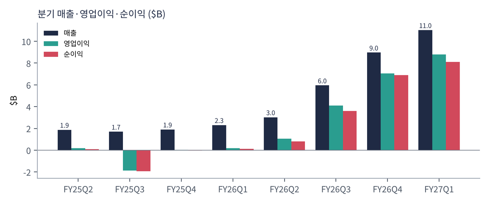
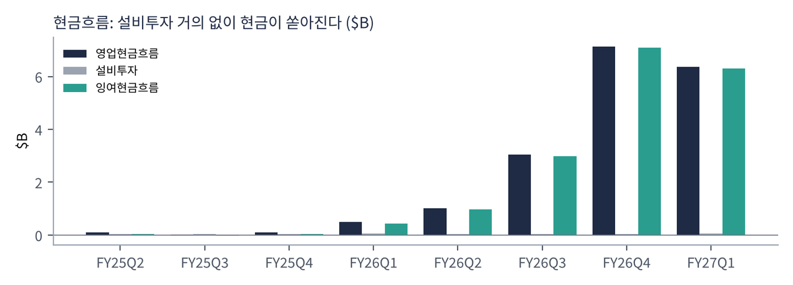
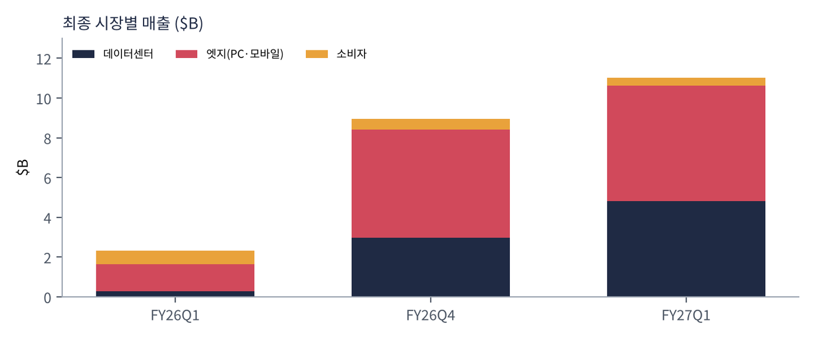
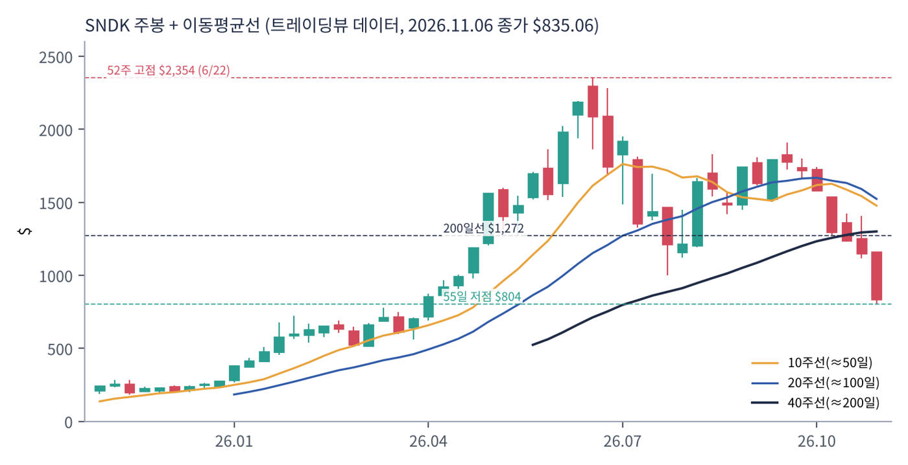
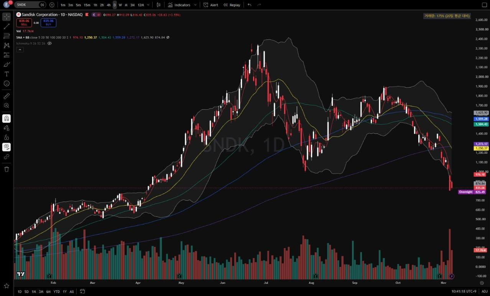
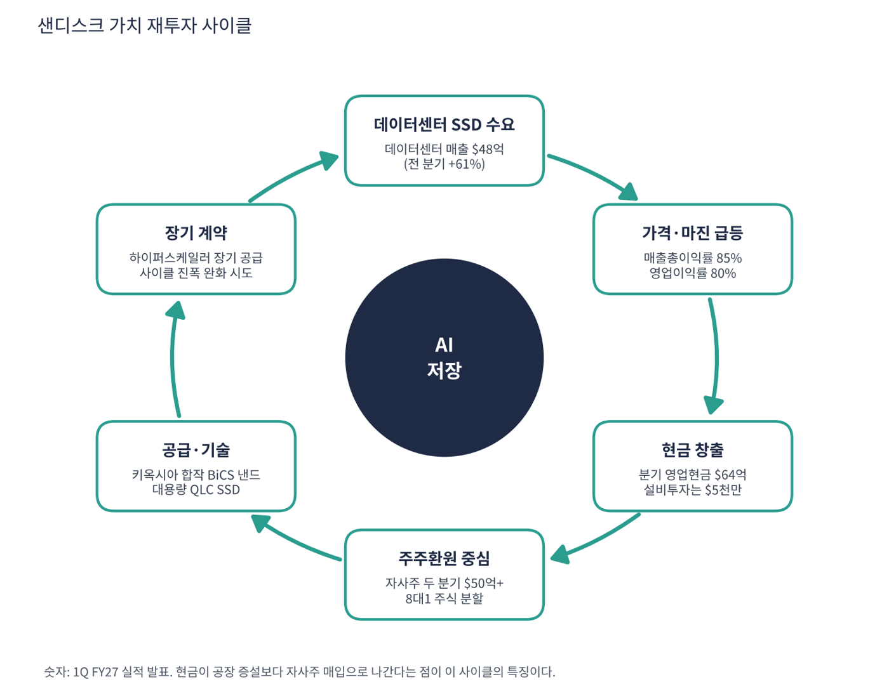

샌디스크는 낸드 플래시 메모리와 SSD(저장장치)를 만드는 회사다. 2016년 웨스턴디지털에 인수됐다가 2025년 2월 다시 분리 상장했다. 일본 키옥시아와 합작으로 공장을 운영하며 삼성전자·SK하이닉스·키옥시아·마이크론과 경쟁한다. 분리 직후엔 영업권 손상으로 대규모 적자를 냈지만, 1년 반 만에 분기 매출 $23억 → $110억(4.8배), 매출총이익률 30% → 85%가 된 회사다.
| 항목 | 내용 |
|---|---|
| 종목 | Sandisk Corporation (SNDK) · NASDAQ · 메모리 반도체 · 2025년 2월 분리 상장 · 본사 캘리포니아주 밀피타스 |
| 시가총액 | 약 $1,188억 · TTM PER 6.7배 (트레이딩뷰, 11/6 종가 $835.06) |
| 최근 분기(1Q FY27) | 매출 $110.3억(전년 +378%), 영업이익 $87.8억(80%), 순이익 $81.0억, EPS $52.60(분할 전) |
| 다음 분기 가이던스 | 2Q 매출 $122~126억, 매출총이익률 84.4~85.4%, 비GAAP EPS $55~57(분할 전) |
| 주식 분할 | 8대1. 11/19 장 마감 후 시행, 11/20부터 분할 후 거래(이 보고서의 가격은 분할 전) |
| 다음 실적 | 2Q FY27 실적: 2027년 1월 말 발표 예상 (회계연도는 6~7월 종료) |
| 직책 | 인물 | 역할·특징 |
|---|---|---|
| 회장 겸 CEO | 데이비드 고클러 | 웨스턴디지털 시절부터 낸드 사업을 이끈 인물. 분리 상장을 주도하고 '기술 리더십·고객 파트너십·재무 규율'을 전략의 세 축으로 제시 |
경영 스타일: '증설보다 환원'. 고클러 CEO는 1분기 코멘트에서 "제품에 대한 강하고 늘어나는 수요로 데이터센터 사업이 가장 빠르게 성장했다"며 투자자의 날에 제시한 전략, 즉 기술 리더십·깊은 고객 파트너십·규율 있는 재무 관리로 "성장하고 지속 가능한 잉여현금흐름"을 만든다고 밝혔다. 분기 설비투자가 $4~5천만에 그쳐 영업현금의 1% 미만이고, 대신 두 분기에 $50억 이상(발행 주식의 약 4%)의 자사주를 사고 8대1 주식 분할로 접근성을 넓혔다. 호황의 현금을 공장이 아니라 주주에게 돌린다.
키옥시아와 공동 개발하는 고적층 BiCS 낸드가 핵심이다. 데이터센터용 대용량 QLC SSD로 AI 학습·추론 데이터를 저장하는 시장을 공략한다. 공장은 키옥시아와 합작으로 운영한다.
경기 순환형 낸드 회사에서 하이퍼스케일러와 장기 계약을 맺는 데이터 저장 인프라 회사로 바뀌는 것이 목표다. 절제된 증설과 장기 계약으로 호황-불황의 진폭을 줄이려 한다.
| 분기(회계) | 매출 | QoQ | 매출총이익률 | 영업이익 | 순이익 | EPS(희석) | 영업현금 | 설비투자 | FCF | 특이 사항 |
|---|---|---|---|---|---|---|---|---|---|---|
| FY25 2Q | $18.8억 | – | 32.3% | $1.9억 | $1.0억 | 0.72 | $0.9억 | $0.5억 | $0.5억 | 분리 상장 전 |
| FY25 3Q | $16.9억 | -10% | 22.5% | -$18.8억 | -$19.3억 | -13.33 | $0.3억 | $0.4억 | -$0.2억 | 영업권 손상 |
| FY25 4Q | $19.0억 | +12% | 26.2% | $0.2억 | -$0.2억 | -0.17* | $0.9억 | $0.5억 | $0.5억 | 업황 바닥 |
| FY26 1Q | $23.1억 | +21% | 29.8% | $1.8억 | $1.1억 | 0.75 | $4.9억 | $0.5억 | $4.4억 | 회복 시작 |
| FY26 2Q | $30.2억 | +31% | 50.9% | $10.7억 | $8.0억 | 5.15 | $10.2억 | $0.4억 | $9.8억 | 가격 급등 |
| FY26 3Q | $59.5억 | +97% | 78.4% | $41.1억 | $36.1억 | 23.03 | $30.4억 | $0.5억 | $29.9억 | 매출 2배 |
| FY26 4Q | $89.7억 | +51% | 84.6% | $70.4억 | $69.0억 | 44.83* | $71.3억 | $0.4억 | $70.8억 | |
| FY27 1Q | $110억 | +23% | 85.0% | $87.8억 | $81.0억 | 52.60 | $63.6억 | $0.5억 | $63.1억 | 사상 최대 |
EPS는 희석 주당순이익(GAAP, SEC 제출 자료 기준)이다. *는 4분기를 '연간 EPS − 1~3분기 합'으로 계산한 근사치라 실제 발표값과 다를 수 있다. 샌디스크 FY25 분기는 웨스턴디지털 분사 전 기준이라 비교 의미가 제한적이다.


흐름 요약: 매출은 다섯 분기 연속 늘었고 FY26 2Q → 3Q에 2배, 3Q → 4Q에 1.5배가 됐다. 판매량이 이만큼 늘 수는 없으므로 대부분이 가격 상승 효과다. 영업비용이 분기 $6억 수준으로 거의 고정이라 매출총이익률 85%가 영업이익률 80%로 이어진다. 설비투자가 분기 $5천만 미만이라 영업현금이 거의 전부 FCF가 되고, 최근 4분기 FCF는 약 $174억이다. 가이던스 성장 폭은 전 분기 대비 +97% → +51% → +23% → +12%로 줄고 있다.
| 최종 시장 | 돈을 버는 방식 | 1Q FY27 매출 | 1년 전 | 비중 |
|---|---|---|---|---|
| 데이터센터 | AI·클라우드 서버용 대용량 엔터프라이즈 SSD(QLC 등) | $48.0억 | $2.7억 | 44% |
| 엣지 | PC·스마트폰·자동차용 낸드·SSD | $58.3억 | $13.9억 | 53% |
| 소비자 | USB·메모리카드·외장 SSD(샌디스크 브랜드) | $4.0억 | $6.5억 | 4% |

데이터센터 매출이 1년 만에 18배(전 분기 +61%)가 됐다. AI 학습 데이터·추론 결과·에이전트 기록을 저장하는 대용량 SSD 수요가 터졌기 때문이다. 엣지 매출도 4배가 됐지만 판매량보다 가격 상승 효과가 크다. 소비자 매출 감소(-39%)는 수익성이 높은 데이터센터·엣지로 물량을 돌린 결과로 보인다. 매출은 비트(용량) × 가격이고 지금은 가격이 성장을 끈다.
고클러 CEO가 내세우는 목적은 "기술 리더십·깊은 고객 파트너십·규율 있는 재무 관리로 성장하고 지속 가능한 잉여현금흐름을 만드는 것"이다.
| 축 | 내용 |
|---|---|
| 기술 | 키옥시아와 공동 개발하는 고적층 BiCS 낸드. 대용량 QLC SSD로 데이터센터 공략 |
| 고객 파트너십 | 하이퍼스케일러와 장기 공급 계약으로 '사이클'을 완화하려는 시도 |
| 재무 규율 | 설비투자 절제(공급 과잉 방지), 자사주 대규모 매입, 8대1 주식 분할로 접근성 확대 |


위: 트레이딩뷰 주봉 데이터로 재구성(10·20·40주선). 아래: 트레이딩뷰 공개 차트 일봉 캡처(작도 숨김, 이동평균선·볼린저밴드만 표시).
| 이동평균 | 값 | 종가 대비 | 해석 |
|---|---|---|---|
| 5일선 | $976.10 | -14.4% | 11월 첫 주 -28% |
| 20일선 | $1,250.37 | -33.2% | |
| 50일선 | $1,504.43 | -44.5% | 아직 200일선 위(골든크로스 유지) |
| 100일선 | $1,559.28 | -46.4% | 8~10월 박스 중심 |
| 200일선 | $1,272.17 | -34.4% | 10월 말 이탈 |
$52에서 $2,354까지 45배 오른 뒤 65% 빠졌다. 실적은 계속 좋아지는데 주가가 6월에 정점을 찍은 전형적인 '이익 정점 선반영' 패턴이다. 가격은 8:1 분할 전 기준이며 8로 나누면 분할 후 가격이다.
| 규칙 | 기준 | 현재 값 | 신호 |
|---|---|---|---|
| 장기 추세 필터 | 종가 vs 200일선 | $835.06 < $1,272.17 | 매도 |
| 중장기 교차 | 50일선 vs 200일선 | $1,504.43 > $1,272.17 | 매수 |
| 단기 교차 | 20일선 vs 50일선 | $1,250.37 < $1,504.43 | 매도 |
| 돈키언 채널 | 55일 고가 $1,909.48 / 저가 $803.97 | 중간값 $1,356.72 아래 | 매도 |
| 1개월 모멘텀 | 21거래일 수익률 | -48.1% (기준 $1,609.46) | 매도 |
| 3개월 모멘텀 | 63거래일 수익률 | -32.5% (기준 $1,237.92) | 매도 |
| 6개월 모멘텀 | 126거래일 수익률 | -46.6% (기준 $1,562.34) | 매도 |
| 12개월 모멘텀 | 252거래일 수익률 | +285.7% (기준 $216.50) | 매수 |
| 종합 (8개 평균) | -0.50 | 매도 우위 |
해석: 12개월 모멘텀(+286%)만 매수이고 나머지 7개 중 6개가 매도다(50일선 > 200일선만 매수). 12개월 기준가는 2026년 1월 이후 $400~700대로 올라가 2027년 초에는 이 신호도 꺾일 가능성이 크다. 14일 ATR $107.33 (12.9%)로 변동성이 극단적이다.
| 가격 | 무엇이 바뀌나 | 의미 |
|---|---|---|
| $1,238 ~ 1,272 | 3개월 모멘텀 + 200일선 + 20일선($1,250) 회복 | 장기 추세 회복의 첫 관문 |
| $1,357 | 돈키언 55일 중간값 회복 | 단기 신호 매수 전환 |
| $1,504 ~ 1,609 | 50일선 + 1개월 모멘텀 회복 | 추세 복귀 확인 |
| $804 이탈 | 55일 신저점 | 2026년 4월 수준($700대)까지 열림 |
| 구분 | 가격대 | 근거 |
|---|---|---|
| 저항 3 | $1,504 ~ 1,560 | 50·100일선, 6개월 기준가 |
| 저항 2 | $1,238 ~ 1,272 | 20일선 $1,250, 200일선 $1,272, 3개월 기준가 $1,238 |
| 저항 1 | $975 ~ 1,000 | 7월 말 저점 $998, 5일선 |
| 지지 1 | $800 ~ 835 | 11/5 저점, 55일 저점 $804 |
| 지지 2 | $690 ~ 760 | 2026년 4월 수준, 손절선 $760 |
변동성이 극단적이라 $800~835에서 계획 비중의 20%만 진입하고 손절은 $760이다(진입 $820·손절 $760 기준 손익비 1:3(1차)~1:7(2차)). 확인 신호는 2Q 가이던스 상단 달성과 데이터센터 장기 가격 계약 발표다. $804를 이탈하면 신저점이라 매수 금지이고, $760 종가 이탈 시 손절 후 $690~720 시험을 열어 둔다. 11/20 분할 전후 수급 변동도 크다.
| 악재 요인 | 내용 | 강도 |
|---|---|---|
| 사이클 정점 | 낸드 가격이 꺾이면 이익이 빠르게 줄어듦. 85% 마진은 지속되기 어려운 수준. 가이던스 성장 폭 +23% → +12%로 둔화 | 높음 |
| 경쟁사 증설 | 삼성전자·SK하이닉스·마이크론·키옥시아·YMTC의 증설이 2027~28년에 몰리면 가격 하락 | 높음 |
| 수요 파괴 | 메모리 가격 급등으로 PC·스마트폰 판매 감소(엣지 매출 53%) | 중간 |
| 키옥시아 의존 | 공장을 합작 운영. 합작 관계 변화가 공급에 영향 | 중간 |
| 극단적 변동성 | ATR 12.9%, 8:1 분할(11/20) 전후 수급 변동 | 참고 |
| 티커 | 회사 | 시가총액 | PER(TTM) | PEG | P/S | EPS 성장(YoY) |
|---|---|---|---|---|---|---|
| SNDK | 샌디스크 | $119B | 6.7배 | – | 4.18배 | – |
| MU | 마이크론 | $781B | 9.3배 | 0.01 | 5.59배 | +879% |
| WDC | 웨스턴디지털 | $99B | 10.2배 | 0.04 | 6.36배 | +275% |
| STX | 시게이트 | $106B | 24.2배 | 0.15 | 7.06배 | +144% |
트레이딩뷰 EPS 성장률은 불황 바닥 대비라 비정상적으로 높다. 샌디스크는 1년 전 적자라 산출되지 않는다.
비교 결론: 메모리·저장 업체 중 PER이 가장 낮다(샌디스크 6.7배, 마이크론 9.3배, 웨스턴디지털 10.3배, 시게이트 24.2배). 낮은 PER은 이익이 곧 꺾일 것이라는 시장의 가격이다. 샌디스크는 낸드에 집중해 가격 변동이 가장 직접 이익에 반영되고, 웨스턴디지털·시게이트는 하드디스크 사업이 섞여 있다.
샌디스크는 적자 기업이 아니다. 영업이익률 80%에 최근 4분기 FCF가 $174억이라 '런웨이'는 의미가 없다. 대신 이 현금이 어디로 가고, 이익이 꺾이면 무엇이 남는지를 본다.
| 지표 | 값 | 계산·출처 | 해석 |
|---|---|---|---|
| 최근 4분기 영업현금 | $175억 | FY26 2Q ~ FY27 1Q 합계 | 1년 전의 약 17배 |
| 최근 4분기 설비투자 | $1.8억 | 같은 기간 합계 | 영업현금의 1% 수준(합작 공장 투자는 별도 처리로 추정) |
| 잉여현금흐름(FCF, TTM) | +$174억 | 영업현금 − 설비투자 (트레이딩뷰 $174억과 일치) | 흑자 |
| 현금성 자산 / 총부채 | $52억 / $2억 | 트레이딩뷰 최근 분기 | 순현금 약 $50억 (분기 말 기준, 자사주 매입 후) |
| 자사주 매입 | 두 분기 합계 $50억+ | 회사 발표 (발행 주식의 약 4%) | 같은 두 분기 FCF($134억)의 약 40% 환원, 나머지는 현금으로 축적 |
| 가정 | 연간 FCF | 의미 |
|---|---|---|
| 1Q FY27 속도 유지 | 약 +$250억 (영업현금 $64억 × 4 − 설비투자) | 현재 실적 |
| 낸드 가격 하락으로 FCF 80% 감소(가정) | 약 +$50억 | 설비투자가 작아 적자 전환 위험은 낮음 |
둘째 행은 내가 둔 스트레스 가정이다. 회사 제시 수치가 아니다.
| 기준 | 매출 | P/S | 비고 |
|---|---|---|---|
| 트레이딩뷰 표시값(11/6 환산) | – | 4.2배 | TTM 기준 |
| 최근 4분기(TTM, SEC) | $290억 | 4.1배 | 시총 $1,188억 ÷ $290억 |
| 2Q FY27 가이던스 연율화 | $496억 | 2.4배 | 중간값 $124억 × 4 (가정) |
| 동종 메모리·저장 | – | – | 마이크론 5.6, 웨스턴디지털 6.4, 시게이트 7.1 |
해석: 샌디스크 P/S 4.1배는 같은 업종 중 가장 낮다. 이 숫자는 싸다는 뜻보다 시장이 이익률 85%를 평년 수준으로 인정하지 않는다는 뜻이다. 이익률이 평년(20~30%)으로 돌아오면 같은 매출에서 이익이 3분의 1 이하다.
| 지표 | 값 | 판정 |
|---|---|---|
| EBITDA (트레이딩뷰, TTM) | $212억 | 흑자 |
| 영업이익 (TTM) | $210억 | FY26 2Q~FY27 1Q 합계 |
| 영업이익 → EBITDA 차이 | 약 $2억 | 감가상각이 작음 (공장 투자가 합작 쪽에 잡히는 것으로 추정) |
| EBITDA 마진 | 73% | $212억 ÷ $290억 |
| 순부채 / EBITDA | 순현금 | 현금 $52억 > 부채 $2억 |
EBITDA는 대규모 흑자다. 감가상각이 작아 영업이익과 거의 같다. 공장을 직접 짓는 마이크론과 구조가 달라 EBITDA만으로 두 회사를 직접 비교하면 안 된다.
| 방식 | PER | EPS 성장률 | PEG | 판정 |
|---|---|---|---|---|
| 트레이딩뷰 (TTM, 11/6 환산) | 6.7배 | 산출 불가 (1년 전 적자 기저) | – | 산출 불가 |
| 선행 (2Q 가이던스 비GAAP EPS $56 × 4 = $224, 추정) | 3.7배 ($835 ÷ $224) | 약 +199% (FY26 EPS 약 $75 → $224, 추정) | 약 0.02 | 적극 매수 |
| 이익 반토막 가정 (EPS $112, 가정) | 7.5배 | -50% | – | 해당 없음 |
판정: PEG는 의미 있는 판단 도구가 아니다. 직전 연도 이익이 적자에서 시작해 성장률이 수백 %이기 때문에 추정 PEG가 0.02여도 '적극 매수'로 읽을 수 없다. 핵심은 PER이다. TTM 6.7배, 선행 3.7배는 시장이 이 이익이 오래가지 않는다고 본다는 뜻이다. 이익이 반토막 나도 PER은 7.5배로 낮아, 주가의 질문은 '이익이 줄어드는 시점이 언제인가'다.

샌디스크 사이클의 엔진은 데이터센터 SSD 수요가 만드는 낸드 가격이다. 다만 마이크론과 달리 현금이 증설로 가지 않고 주주환원과 현금 축적으로 간다는 점이 특징이다.
| 고리 | 현재 숫자 | 고리 강도 | 약해지는 신호 |
|---|---|---|---|
| ① 데이터센터 수요 | 데이터센터 매출 $48.0억(전 분기 +61%, 1년 전 $2.7억) | 강함 | AI 서버당 SSD 탑재량 증가 둔화 |
| ② 가격·마진 | 매출총이익률 85%, 영업이익률 80%, 2Q 가이던스 84~85% 유지 | 정점권 | 낸드 계약가 하락, 가이던스 성장 +23% → +12%로 둔화 |
| ③ 현금 창출 | 분기 영업현금 $64억, TTM FCF $174억 | 강함 | 영업현금이 영업이익보다 줄어드는 흐름(1Q는 $64억 < 4Q $71억) |
| ④ 환원·절제된 투자 | 분기 설비투자 $5천만, 자사주 두 분기 $50억+, 8대1 분할 | 환원 중심 | 자사주 매입 후 주가 하락, 증설 압박 |
| ⑤ 공급·기술 | 키옥시아 합작 BiCS, 대용량 QLC SSD | 진행 중 | 경쟁사(삼성·SK하이닉스·마이크론·키옥시아·YMTC) 증설 |
| ⑥ 장기 계약 | 하이퍼스케일러와 장기 공급 계약으로 사이클 진폭 완화 시도 | 진행 중 | 가격 고정형 계약이 아직 공시되지 않음 |
이 사이클의 구조: 가격(②)이 이익을 만들고 이익이 현금(③)으로 가지만, 재투자 대신 환원(④)이 크다. 그래서 사이클이 스스로 공급을 늘려 가격을 낮추는 효과는 작지만, 회사 밖의 공급(경쟁사 증설)이 가격을 낮출 수 있다. 약한 고리는 ②(가격 정점)와 ⑥(장기 계약 미확인)이고, 강한 고리는 ①·③이다.